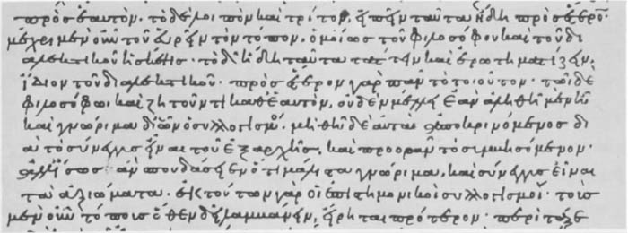

科学——至少是理论性科学——是要公理化的。那么它们的公理又是什么呢？一个命题必须要满足什么样的条件才能被视做公理呢？还有，每个学科里进行推导时要采用什么形式？定律由公理推导要通过什么样的规则？这些都是亚里士多德在他的逻辑学作品，尤其是在《前分析篇》和《后分析篇》中提出的问题。让我们首先看一下演绎的规则，并同时看一看亚里士多德逻辑学的形式部分。“所有句子都有意义……但不是所有的句子都构成陈述：只有那些能被证明真伪的句子才构成陈述。”“在所有陈述中，一些是简单命题，也就是说，那些肯定或否定某些事物的某些方面的命题；有些则由简单命题组成，因此是复合句。”作为一个逻辑学家，亚里士多德只对能被判断真伪的句子感兴趣（命令、疑问、劝戒句等是修辞学和语言学学者关注的对象）。他主张，每个这样的句子要么是简单句，要么是由简单句组成的复合句；他的解释是，简单句是那些肯定或否定某些事物的某些方面——后来他又坚称是肯定或否定某→事物的某→方面——的句子。
在《前分析篇》中，亚里士多德使用了“命题”这个词描述简单句，并使用“项”来描述凸显部分。因此，一个命题肯定或否定某物的某个方面，某物和某个方面就是它的两个“项”。被肯定或否定的事物叫做命题的谓项；由谓项肯定或否定的事物被称为命题的主项。亚里士多德逻辑学关注的所有命题要么是一般性的，要么是特定的；换句话说，它们肯定或否定一个谓项做某一类的全部项、某一项或某几项。因此，在命题“每个胎生动物都是有脊椎的”中，“有脊椎的”是命题的谓项，短语“胎生动物”是主项；命题肯定了谓项对主项的描述——而且所有的主项都具有谓项的描述内容。同样地，在命题“一些卵生的动物不是有血的”中，“有血的”是谓项，“卵生的动物”是主项；命题否定某些主项具有谓项内容。很容易看出，亚里士多德的逻辑学准确地说在关注四种命题：完全肯定命题，肯定所有某个事物的某方面；完全否定命题，否定所有某个事物的某方面；个别肯定（特称肯定）命题，肯定某类型中某些事物的某个特征；个别否定（特称否定）命题，否定某类型中某些事物的某个特征。
此外，命题还有各种不同的语气：“每个命题表达的或者是某物具有，或者是某物必然具有，或者是某物可能具有。”因此，命题“一些枪乌贼可长到三英尺长”肯定的是，一码 [1] 长实际上对一些枪乌贼而言是真实的。命题“每个人必然是由肉、骨等构成的”是说，每个人都必然具有肉身 ——如果不是由肉、骨等构成的就不能称其为人。“可能的是，没有马睡觉”说的是，睡觉 可能不是马的行为——每个马都可能一直保持醒着的状态。这三种语气或“模态”被称为（尽管不是被亚里士多德称为）“断言”、“绝对”和“模糊”。
总之，那就是亚里士多德对命题性质的描述，这在《分析》 [2] 中可以找到。所有命题或者是简单命题，或者是由简单命题构成的复合命题。每个简单命题包含两个项：谓项和主项。每个简单命题或者是肯定，或者是否定；或者是一般性的，或者是特定的。每个简单命题或者是断言的，或者是绝对的，或者是模糊的。

图9“哲学家肯定会迫切地去获得与研究问题有关的已知公理；因为科学三段论正是建立在这些公理之上的”（《论题篇》，第155页14-16行）。这里展示的手稿是由修道士伊弗里姆于公元954年11月写的。
《分析》中的观点与短文《论解释》的并不完全一样，亚里士多德在《论解释》中详细探讨了简单命题的性质和结构。作为一种观点，它受到各种各样的反对。所有的 命题都是简单命题或是由简单命题组合成的复合命题吗？比如，“人们现已知道的是，章鱼的最后一根触须是分叉的”这个句子肯定是个复合命题——它其中的一部分包含了命题“章鱼的最后一根触须是分叉的”。但它不是由简单命题构成的复合命题。它由一个简单命题构成，这个命题前加了“人们现已知道的是”，而这个前缀不是命题。还有，所有的简单命题都只由两个项组成吗？“下雨了”就很简单。但这个句子包括两个 项吗？还有，“苏格拉底是人”是什么类型的命题呢？这个句子当然包含了一个谓项和一个主项。但它既不是一般性命题，也不是特定命题——它不是在说“全部”或“一些”苏格拉底的任何情况；毕竟，“苏格拉底”这个名字不是个一般词，因此（正如亚里士多德本人所说）“所有”和“一些”这样的词不适合本句。
最后，再来看这样一些句子：“奶牛有四个胃”、“人一次生产一个后代”、“牡鹿每年脱落一次鹿角”——这些句子构成亚里士多德生物学作品的内容。每个 奶牛都有四个胃是不正确的——也有畸形的奶牛有三到五个胃。然而作为生物学家的亚里士多德并非想说，一些 奶牛恰巧有四个胃，更不是说大多数奶牛有四个胃。相反他想说的是，每个 奶牛在自然状态下有四个胃（即使由于出生时发生意外，一些奶牛实际上没有四个胃）。亚里士多德强调，在自然状态下许多事物“大部分地”有效；并且他认为自然科学的大部分事实都可用这样的句子形式表达：在自然状态下，所有某某某某都这般这般，即如果某某某某大部分都这般这般，那么这个句子就是正确的。但是那种形式句子的确切结构又是怎样的呢？亚里士多德极力思考这个问题，却没有找到满意的答案。
亚里士多德在《前分析篇》里提出的逻辑体系是以对命题性质的描述为基础的。他所考虑的论点都由两个前提和一个结论组成；这三个成分每个都是一个简单命题。逻辑学是一门概括性分支学科，亚里士多德想概括地处理所有（他所描述的各类）可能的论点。但是论点无限多，没有什么专题论文能够对所有论点进行分别论证。为了获得概括性，亚里士多德引入一种简单的方法。不用特定的词——“人”“马”“天鹅”——来描述和突出论点，他使用字母A、B、C。不使用真正意义上的句子，比如“每个章鱼有八根触须”，他使用准句子或逻辑式，比如“每个A是B”。使用字母和逻辑式可使亚里士多德高度概括地进行论述；因为如果一个逻辑式为真，那么这个逻辑式里每个特定的情形都是真值。比如，亚里士多德需要表明：我们从“一些海洋生物是哺乳动物”可推断出“一些哺乳动物是海洋生物”，从“一些男人是希腊人”可推断出“一些希腊人是男人”，从“一些民主政权不是自由的”可推断出“一些非自由政权是民主的”，等等——他是想表明（按专业的说法）：每个特定的肯定性命题都可以进行转换。他实现这种转换，是通过对逻辑式“一些A是B”进行思考，并证明可以从该逻辑式推断出相应的逻辑式“一些B是A”来做到的。如果那样证实该逻辑式是正确的，那么就可以一次性地证明，那种逻辑式无限多的情形都是正确的。
亚里士多德创造性地使用了字母。现在，逻辑学家对这一创造十分熟悉，不假思索地进行应用，他们或许已忘记这样的发明是多么了不起。《前分析篇》常常使用字母和逻辑式。因此，亚里士多德描述并认可的第一类论点就是通过字母进行表述的：“如果A断定每一种B，并且B断定每一种C，那么A必然断定每一种C。”在这种形式的论证里，所有三个命题（两个前提和一个结论）都是一般性的、肯定的、断言的。举个例子：“每个呼吸的动物都有肺；每个胎生动物都呼吸；因此每个胎生动物都有肺。”
在《前分析篇》的第一部分里，亚里士多德考虑了所有简单命题的可能组配，并确定了从哪些组配中可以推出第三个简单命题、哪些组配不能得出结论。他将组配分为三组，或称为三“格” [3] ，以一种严密而有序的方式展开讨论。根据一种固定的形式进行组配，亚里士多德用符号表示每一组配，并从形式上证明可能得出什么样的结论（如果能得出的话）。整个叙述被认为是第一篇形式逻辑学论文。
《前分析篇》中的逻辑理论被称为“亚里士多德的三段论法”。希腊单词sullogismos被亚里士多德解释如下：“一个三段组合就是一个论点：某些事物被假定，与这些假定事物不同的事物根据被它们自身证明为正确的事实而必然出现同样的结论（假定）。”《前分析篇》的理论是一种三段演绎法——一种我们或许会称为演绎推理的理论。
亚里士多德对自己的理论作过很多重要的断言：“每个证明和每个演绎推理（三段演绎）必定要通过我们所描述的格才能产生”；换言之，每一个可能的演绎推理都可以被证明，是由亚里士多德所分析过的论点中的一种或多种依次排列构成的。实际上，亚里士多德是在断言他已创立了一套完整而完美的逻辑学；他还提出了一个复杂的论点来支持自己的断言。该论点是有缺陷的，因而他的断言也是错误的。而且，该理论沿袭了命题描述方面的缺点，而命题描述正是该理论的基础——此外它本身还包含许多内在的不足。然而，后来的思想家对亚里士多德的阐释力如此折服，以至于一千多年来亚里士多德的三段论演绎法一直被教授着，就像是其中包含了逻辑真理的精华。不管从哪一方面来看，《前分析篇》——开创逻辑学的第一次尝试——确实是一部杰出的天才之作。其行文优美而有条不紊，其论点有序、清晰而严密，并且实现了很好的概括性。